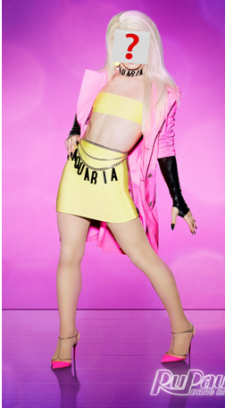
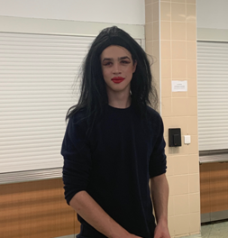
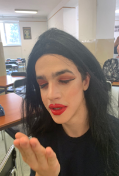

CONTESTANTS LEAKED!!!
The reality competition phenomenon known as RuPauls Drag Race has its contestants leaked...
Queens competing for the title of "Americas next drag superstar" are known and fans are ecstatic. This year Ru is going international with his contestants, having a queen from Slovakia.
Queens competing for the title of "Americas next drag superstar" are known and fans are ecstatic. This year Ru is going international with his contestants, having a queen from Slovakia.
This queen is none other than Sleeping Beauty, who has stolen the hearts from many. Recent photographs have been of Sleeping Beauty in GJH. Her identity has been hidden for years, but not anymore.
The face behind the layers of foundation isnt as on fleek . 15-year old Teodor Bruno Krajc has been hiding his drag persona for 3 years. In a recent interview Teo said: "It was time for me to come out and stop hiding my true self." He also talked about how he first got into drag seeing Violet Chachki drag aerial performance. Sleeping Beauty is known as the lip sync assassin and mainly as a pageant queen.
Do you think Sleeping Beauty has a chance in winning or will she lose? We hope she snatches the crown and doesnt have to sashay away any time soon.
Lets get SICKENINGGGGG!